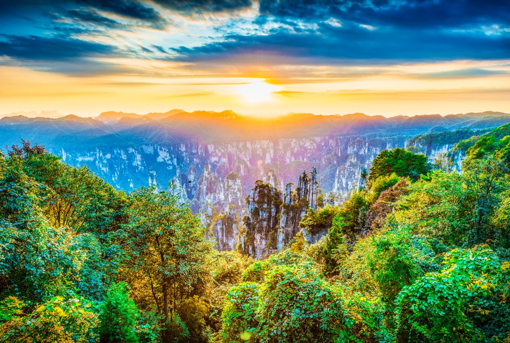

張家界國家森林公園
張家界國家森林公園位於張家界市武陵源區金鞭路279號，1988年8月，張家界武陵源旅遊區被列入國家重點風景名勝區；1992年12月，因奇特的石英砂岩大峯
林被聯合國列入《世界自然遺產名錄》，2004年2月被列入世界地質公園；2007年被列入中國首批國家5A級旅遊景區，公園總面積4810公頃。
武陵源旅遊區自然風光以峯稱奇、以谷顯幽、以林見秀。其間有奇峯3000多座，如人如獸、如器如物，形象逼真，氣勢壯觀，有“奇峯三千，秀水八百”之美稱。
主要景點有黃石寨、金鞭溪、袁家界、楊家界等。
2023年10月6日，中秋、國慶8天長假在綿綿秋雨中落幕。假期間，張家界武陵源景區（張家界國家森林公園）共接待中外遊客逾26萬人。
主要景點
旅遊景點有：武陵源風景名勝區，桑植縣九天洞、八大公山，永定區茅巖河漂流、天門山，慈利縣五雷山，永定區玉皇洞石窟、普光禪寺等。有張家界國家
森林公園、索溪峪自然保護區、天子山自然保護區、八大公山自然保護區、天門山國家森林公園等。紀念地有紅二方面軍長征出發地、賀龍故居、中華蘇維埃
共和國湘鄂川黔省革命委員會、省軍區舊址等。美國好萊塢曾到張家界來拍照取景，照片被卡梅隆導演看上，用在了電影《阿凡達》上了。
地貌
張家界的砂岩峯林地貌是一種獨特的地貌形態和自然地理特徵，發育於泥盆系雲台觀組和黃家磴組，峯林集中分佈區面積86平方千米。它是在特定的地質構造部
位、特定的新構造運動和外力作用條件下形成的一種舉世罕見的獨特地貌。在園內有3000多座拔地而起的石涯，其中高度超過200米的有1000多座，金鞭巖竟高
達350米，個體形態有方山、台地、峯牆、峯叢、峯林、石門、天生橋及峽谷、嶂谷等。公園以砂岩峯林地貌景觀為核心、以岩溶地貌景觀為襯托，兼有成型地
質剖面、特殊化石產地等大量地質遺蹟，構成獨具特色的砂岩峯林地貌組合景觀。